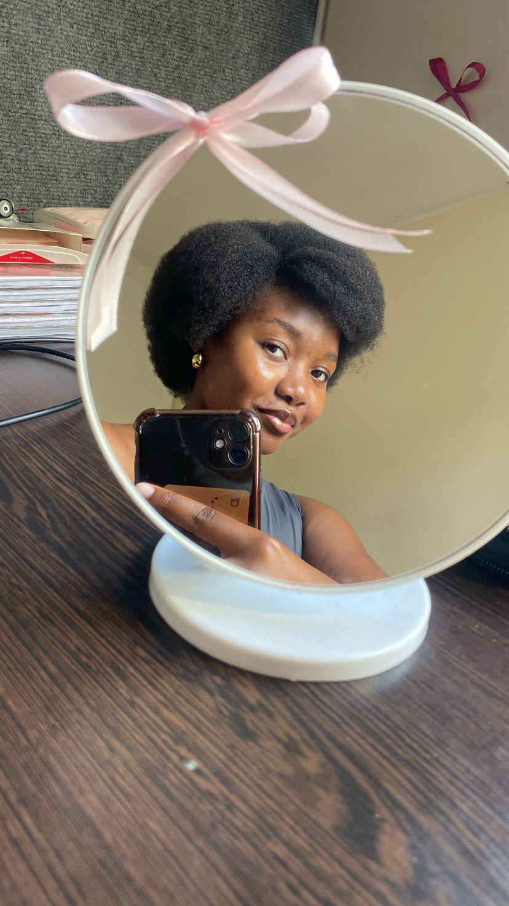

Hlubikazi’s Little World
Sawubona, ndlovukazi yami. Ngithemba ukuthi uyaphila.
The past 19 years have been filled with adventures, joy, tears, highs and lows and all of it has shaped the incredible person you are today. That is true growth. I wish you many more years filled with grace, blessings, happiness, and abundant success. On the 17th of April 2006, you graced this world with your presence and I see that clearly, because ever since I met you, I’ve been smiling a lot more. Impela injabulo engaka iyangimangaza nami. You’ve ignited something in me that I thought had long faded, and for that, I truly appreciate you ndlovukazi yami. I first met you on the 31st of January 2026 at the Sports Centre, and somehow it feels like I’ve known you for much longer, maybe it’s the daily “podcasts” we have and the long conversations we share. I honestly wish I had met you sooner. You are someone with a beautiful soul, a warm heart, a kind spirit, a natural leader, and an intelligent young woman. Uma ngingaqhubeka ngibala, kungashona ilanga. Please continue being yourself as you step into this new chapter of your life. And your beauty… it’s something I don’t think I’ll ever fully understand. Ngisasho nanamuhla ukuthi ubuhle obungaka ngiyabuqala. You leave me mesmerised every single time I see you. Even as I write this, I’m still in awe. That’s actually why I chose to write this down, because whenever I see you, my thoughts just disappear. Kumina ndlovukazi, isiNgisi siyaye sifike siphinde sihambe futhi njengamanje sesingiphelele. Kodwa ngithemba ukuthi umyalezo wami uzwakele futhi wafinyelela ngaphakathi kuwe, ngoba konke engikubhalile kuvela endaweni enzulu ngaphakathi kimi.
Once again, happy birthday ndlovukazi yami.
And if you look below… you’ll see my queen.
Who wouldn’t be captivated?
